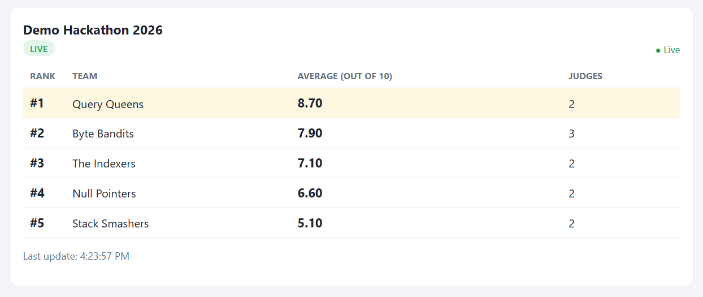
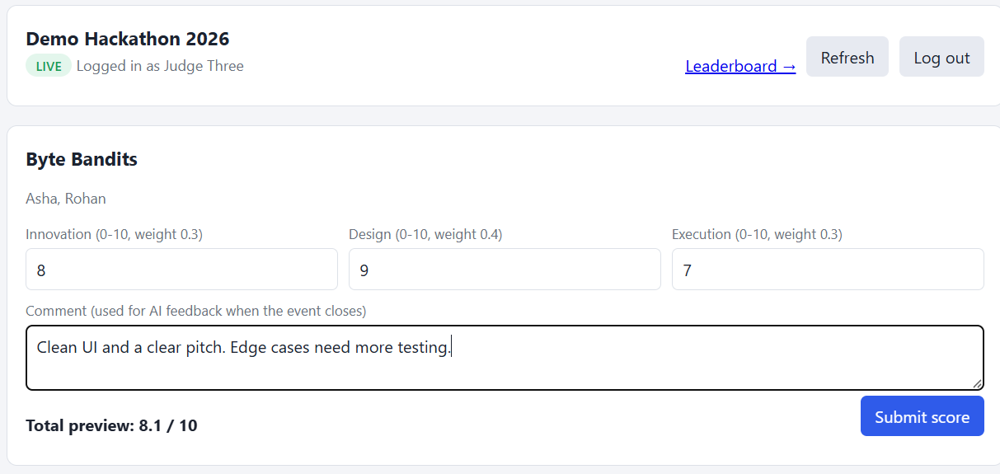
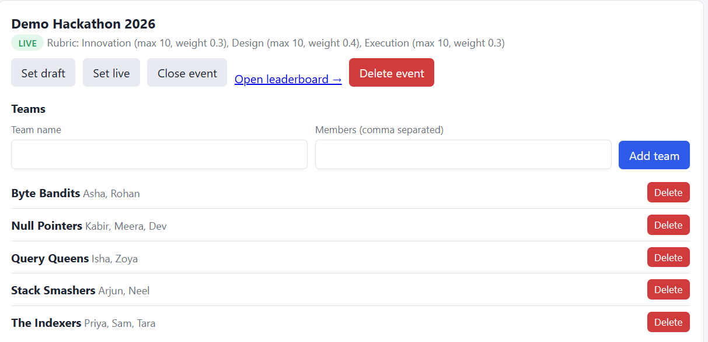
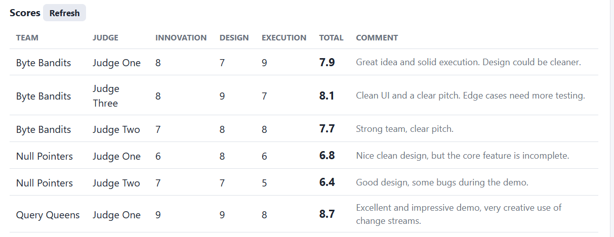
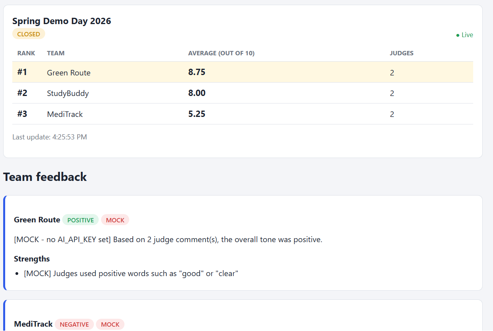

Hackathons, project expos and college competitions are usually judged on paper or in shared spreadsheets. Totals are added by hand, rankings are announced late, and teams rarely receive written feedback. This project builds a web based judging system in which judges score teams against a weighted rubric from their own devices, a public leaderboard updates instantly for everyone watching, and, once the event closes, a large language model summarises each team's judge comments into short, structured feedback.
The system is built on MongoDB Atlas using the official native Node.js driver, so every query, index and pipeline is visible in the code. It demonstrates the core NoSQL ideas of the course: a flexible document model that mixes embedding and referencing, $jsonSchema validation on every collection, compound and unique indexes verified with explain(), a multi-stage aggregation pipeline using $group, $lookup, $setWindowFields with $rank and $merge, and Change Streams that push live updates to browsers through Server-Sent Events. All six required test cases pass using Node's built-in test runner.
| 1. Introduction | 3 |
| 2. Technology Stack | 3 |
| 3. System Architecture | 4 |
| 4. Database Design | 5 |
| 5. Schema Validation with $jsonSchema | 6 |
| 6. Indexing Strategy and Query Performance | 6 |
| 7. Leaderboard Aggregation Pipeline | 7 |
| 8. Real-Time Updates: Change Streams and SSE | 8 |
| 9. AI Feedback Module | 9 |
| 10. Security and Input Validation | 9 |
| 11. Application Interface | 10 |
| 12. Testing | 11 |
| 13. Conclusion and Future Scope | 11 |
| References | 11 |
At a live event several judges evaluate many teams at the same time. Manual judging creates four practical problems: arithmetic errors when weighted marks are combined, a judge accidentally scoring the same team twice, a long delay before results can be announced, and almost no useful written feedback reaching the teams. The goal is a system that removes all four.
explain() and cover the main behaviours with automated tests.The project includes a REST API, three browser pages (admin, judge and public leaderboard), database setup and seed scripts, a query analysis script and an automated test suite. User registration, multiple administrators and payment or ticketing features are outside the scope.
Each rubric criterion has a maximum mark and a weight, and the weights of an event add up to 1. A judge's total for a team is always out of 10:
total = 10 x SUM( (mark_i / max_i) x weight_i ) Example: marks 8, 7, 9 (max 10 each), weights 0.3, 0.4, 0.3 total = 10 x (0.24 + 0.28 + 0.27) = 7.9
A team's leaderboard score is the average of the totals given by all judges who scored it.
| Layer | Technology | Reason for the choice |
|---|---|---|
| Database | MongoDB Atlas (free cluster) | Document model fits nested rubrics and free-form criteria. Atlas runs as a replica set, which Change Streams require. |
| Database driver | Official mongodb driver (v7) | No ODM such as Mongoose, so all queries, indexes and pipelines are written directly and remain visible. |
| Server | Node.js 22 and Express 5 | Lightweight HTTP server. Express 5 forwards errors from async handlers automatically. |
| Live updates | Server-Sent Events | One-way server to browser push over plain HTTP, with automatic reconnect in the browser. |
| Frontend | HTML, CSS, vanilla JavaScript | No build step and no framework, served directly by Express. |
| Authentication | JSON Web Tokens, SHA-256 | Stateless signed tokens; judge codes are stored only as hashes. |
| AI | OpenRouter (OpenAI-compatible API) | Access to free LLMs through one HTTP endpoint, isolated in a single file. |
| Testing | Node built-in test runner | node --test with the global fetch; no extra test libraries. |
The system follows a classic three-tier structure. Browsers talk to an Express server over a JSON API. The server holds all business rules and talks to MongoDB Atlas through a single shared connection pool. A Change Stream opened by the server is the link that turns a database write into a live update on every open leaderboard.
scores. The unique index rejects a duplicate.The database contains six collections. Relationships are expressed with ObjectId references, except for the rubric, which is embedded inside its event.
| Collection | Fields | Purpose |
|---|---|---|
events | name, status (draft, live, closed), rubric [ {key, label, max, weight} ], createdAt | One competition and its embedded scoring rubric |
teams | eventId, name, members [String] | Teams taking part in an event |
judges | eventId, name, codeHash | Judges and the SHA-256 hash of their access code |
scores | eventId, teamId, judgeId, criteria {key: Number}, total, comment, submittedAt | One judge's marks for one team |
leaderboard | eventId, teamId, teamName, avgScore, judgesCount, rank, updatedAt | Pre-computed ranking, written only by $merge |
feedback | eventId, teamId, summary, strengths [ ], improvements [ ], sentiment {label, score}, source, generatedAt | AI or mock feedback for each team |
The rubric is embedded in the event document. It is small (a handful of criteria), it is always read together with its event, and it never needs to be queried on its own. Embedding means one read returns everything needed to validate a score.
Scores are referenced, not embedded inside teams or events. Scores are written frequently by many judges at the same time, they grow with the number of judges multiplied by teams, and they are queried independently (per event, per team, per judge). Embedding them would create large, constantly rewritten documents and would make the unique judge-team rule impossible to enforce with an index.
The leaderboard is a materialised view. Rather than recomputing rankings on every page view, the aggregation stores its result in a collection, and reading the leaderboard becomes a simple indexed query. The team name is copied into each row (controlled denormalisation) so that the public page needs no join.
// events
{ "_id": ObjectId("6ad4..f68d"), "name": "Demo Hackathon 2026", "status": "live",
"rubric": [ { "key": "innovation", "label": "Innovation", "max": 10, "weight": 0.3 },
{ "key": "design", "label": "Design", "max": 10, "weight": 0.4 },
{ "key": "execution", "label": "Execution", "max": 10, "weight": 0.3 } ],
"createdAt": ISODate("2026-10-18T10:30:00Z") }
// scores
{ "_id": ObjectId("6ad4..f6b2"), "eventId": ObjectId("6ad4..f68d"),
"teamId": ObjectId("6ad4..f68e"), "judgeId": ObjectId("6ad4..f693"),
"criteria": { "innovation": 8, "design": 7, "execution": 9 },
"total": 7.9, "comment": "Great idea and solid execution.",
"submittedAt": ISODate("2026-10-18T10:42:11Z") }
MongoDB is schemaless by default, so a bug in application code could silently store malformed documents. Every collection is therefore created with a $jsonSchema validator, validationLevel: "strict" and validationAction: "error", so the database itself rejects any insert or update with the wrong shape. The setup script is idempotent: new collections are created with the validator, existing ones are updated with collMod.
scores: {
$jsonSchema: {
bsonType: "object",
required: ["eventId", "teamId", "judgeId", "criteria", "total", "submittedAt"],
properties: {
eventId: { bsonType: "objectId" },
teamId: { bsonType: "objectId" },
judgeId: { bsonType: "objectId" },
criteria: { bsonType: "object", additionalProperties: { bsonType: "number" } },
total: { bsonType: "number", minimum: 0, maximum: 10 },
comment: { bsonType: "string" },
submittedAt: { bsonType: "date" }
}
}
}
Notable rules in the other validators:
criteria accepts any key but only numeric values, because its keys depend on each event's rubric.events.status is restricted with an enum to draft, live or closed.judges.codeHash must match the pattern ^[a-f0-9]{64}$, so a plain-text code can never be stored by mistake.feedback.sentiment.score must lie between -1 and 1.Some rules cannot be expressed in $jsonSchema, such as rubric weights summing to 1 or criteria keys matching the event's rubric. These are enforced in the Node.js validation layer, giving two layers of protection.
| Collection | Index | Why it exists |
|---|---|---|
scores | UNIQUE { eventId: 1, teamId: 1, judgeId: 1 } | Stops a judge scoring the same team twice. Duplicate inserts fail with error 11000, returned to the client as HTTP 409. |
scores | { eventId: 1 } | Serves the $match stage of the leaderboard pipeline and the admin score list. |
teams | { eventId: 1 } | Fast listing of the teams in an event. |
judges | { eventId: 1 } | Fast listing of the judges in an event. |
judges | UNIQUE { codeHash: 1 } | Judge login looks up a hash; also guarantees no two judges share a code. |
leaderboard | UNIQUE { eventId: 1, teamId: 1 } | Required by $merge, which matches rows on these fields. |
feedback | UNIQUE { eventId: 1, teamId: 1 } | One feedback document per team; regeneration is an upsert. |
Because the unique rule lives in the database rather than only in application code, it holds even if two requests from the same judge arrive at the same instant.
The script scripts/explain.js runs two queries with explain("executionStats") and reports the winning plan. It was run once after dropping the scores indexes and once after recreating them. The seeded database holds 16 scores across two events, 10 of which belong to the event being queried.
| Query | Indexes | Plan | Keys examined | Docs examined | Returned |
|---|---|---|---|---|---|
scores.find({ eventId }) | Dropped | COLLSCAN | 0 | 16 | 10 |
| Present | IXSCAN (eventId_1) | 10 | 10 | 10 | |
| Leaderboard aggregation | Dropped | COLLSCAN, GROUP | 0 | 16 | 5 |
| Present | IXSCAN, FETCH, GROUP | 10 | 10 | 5 |
Query 1: scores.find({ eventId }) (after: npm run explain)
Plan stages : FETCH -> IXSCAN
RESULT : IXSCAN (index scan) using index eventId_1
Documents returned : 10
Index keys examined: 10
Documents examined : 10
Without the index MongoDB must read every score in the collection and discard those from other events. With the index it reads only the matching entries, so the documents examined equal the documents returned. On this small demo the time difference is negligible, but the ratio grows with the number of events: with 100 events of similar size a collection scan would read about 100 times more documents than needed.
All averaging and ranking is done inside MongoDB by a single pipeline in services/leaderboard.js. Node.js only starts it.
| # | Stage | What it does |
|---|---|---|
| 1 | $match | Keeps only the scores of one event. Placed first so it can use the eventId index. |
| 2 | $group | One result per team: $avg of total gives avgScore, $sum: 1 counts judges. |
| 3 | $set + $round | Rounds the average to 2 decimals before ranking, so displayed ties share a rank. |
| 4 | $lookup + $unwind | Joins the teams collection to fetch each team's name; drops scores of deleted teams. |
| 5 | $setWindowFields + $rank | Sorts by avgScore descending and assigns competition ranks (1, 2, 2, 4). |
| 6 | $project | Shapes each row exactly like a leaderboard document. |
| 7 | $merge | Upserts rows into leaderboard on { eventId, teamId }. |
{ $setWindowFields: { sortBy: { avgScore: -1 }, output: { rank: { $rank: {} } } } },
{ $merge: { into: "leaderboard", on: ["eventId", "teamId"],
whenMatched: "replace", whenNotMatched: "insert" } }
Since $merge only inserts and replaces, rows for teams that no longer have scores would remain. Each run stamps rows with the same updatedAt, and any row of that event with an older timestamp is deleted immediately afterwards.
A Change Stream lets an application subscribe to data changes as they happen. MongoDB reads its replication log (the oplog) and pushes each change to the subscriber, so the server never has to poll. This is the reason the project needs a replica set, which every Atlas cluster provides.
const stream = db.collection("scores").watch(
[{ $match: { operationType: { $in: ["insert", "update", "replace", "delete"] } } }],
{ fullDocument: "updateLookup" }
);
stream.on("change", (change) => {
queue = queue.then(() => handleChange(change)); // one change at a time, in order
});
updateLookup), so the server knows the exact event and recomputes only that leaderboard._id, not the document, so the event is unknown. The server safely recomputes every event whose status is live.scores. It writes only to leaderboard, which is not being watched. Writing to the watched collection would produce a new change event and an infinite loop.The endpoint GET /api/events/:eventId/stream responds with Content-Type: text/event-stream and keeps the connection open. It sends the current leaderboard immediately, registers the response in sse.js, and from then on every recompute writes a message of the form event: leaderboard followed by the JSON rows. A comment line every 25 seconds keeps proxies from closing idle connections, and the browser's EventSource reconnects automatically. SSE was preferred over WebSockets because the data flows in one direction only and SSE needs no extra library.

When an event is closed, the administrator can generate feedback. For each team the server collects all non-empty judge comments and sends them to an LLM in a single request through OpenRouter's OpenAI-compatible endpoint. All provider-specific details (URL, headers, model name, prompt and reply parsing) live in services/ai.js, so switching to another provider means editing one file.
POST {AI_BASE_URL}/chat/completions
Authorization: Bearer {AI_API_KEY}
{ "model": "{AI_MODEL}", "temperature": 0.3,
"messages": [ { "role": "system", "content": "Reply with JSON ONLY ..." },
{ "role": "user", "content": "Team: MediTrack Judges' comments: 1. ..." } ] }
Expected reply: { "summary": "...", "strengths": ["..."], "improvements": ["..."],
"sentiment": { "label": "positive|neutral|negative", "score": -1..1 } }
JSON.parse.source: "mock", so the demo works offline and the tests need no network.| Concern | Measure taken |
|---|---|
| Admin password check | Both values are hashed with SHA-256 and compared using crypto.timingSafeEqual, which prevents timing attacks. |
| Judge access codes | Generated with crypto.randomBytes, shown once, and stored only as a SHA-256 hash. |
| Sessions | Signed JWTs that expire after 12 hours. A judge token stops working if that judge is deleted. |
| Authorisation | Admin routes return 401 without a token and 403 for a judge token. Judges can score only teams of their own event and edit only their own scores. |
| Marks | Must be real numbers between 0 and the criterion's max. Unknown or missing criteria are rejected. |
| Event state | Scoring is allowed only while the event is live; feedback only after it is closed; the rubric is locked once scores exist. |
| Identifiers | Every id is checked to be a 24-character hex string before it reaches the driver. |
| Error responses | Always { "error": "message" } with a correct status code (400, 401, 403, 404, 409). Stack traces are logged on the server only. |
| Browser output | Pages insert data with textContent only, so names cannot inject HTML or scripts. |
| Secrets | Kept in .env, which is git-ignored. Only .env.example with empty values is tracked. |
The three pages are plain HTML and JavaScript served by Express. The judge page shows one card per team with an input for each rubric criterion and a live total preview; the server recomputes and stores the authoritative total.




The suite in tests/api.test.js uses Node's built-in test runner. It starts the real Express app on a random port, connects to a separate <DB_NAME>_test database built with the same validators and indexes, runs the Change Stream, and drops the test database at the end.
| # | Test case | Expected and verified behaviour | Result |
|---|---|---|---|
| 1 | Judge submits valid marks | 201 Created, total equals 7.9, one document saved | Pass |
| 2 | Marks above the allowed max | 400 with "must be between 0 and 10" | Pass |
| 3 | Same judge scores the same team twice | 409 from the API; a direct insert also fails with code 11000 | Pass |
| 4 | Judge edits a score | Total recalculated to 2.0; Change Stream moves the team from rank 1 to rank 2 | Pass |
| 5 | Unauthorised user on an admin route | 401 with no or a forged token, 403 with a judge token | Pass |
| 6 | Generate AI feedback (mock) | 409 while live; after closing, summary and sentiment saved with source "mock" | Pass |
Result of npm test: 6 tests, 6 passed, 0 failed, in 1.9 seconds.
Manual checks also confirmed correct errors for unknown criteria, string marks, malformed JSON, invalid ids and wrong passwords, and that an invalid API key falls back to mock feedback after one retry.
The project delivers a working real-time judging platform and, more importantly for this course, shows how MongoDB's own features carry the core logic. Validation rules live in $jsonSchema, the one-score-per-judge rule lives in a unique compound index, averaging and ranking live in an aggregation pipeline that materialises its result with $merge, and live updates are driven by a Change Stream rather than polling. The explain() results confirm that the chosen indexes turn full collection scans into index scans that read only the documents needed.
Possible extensions include: